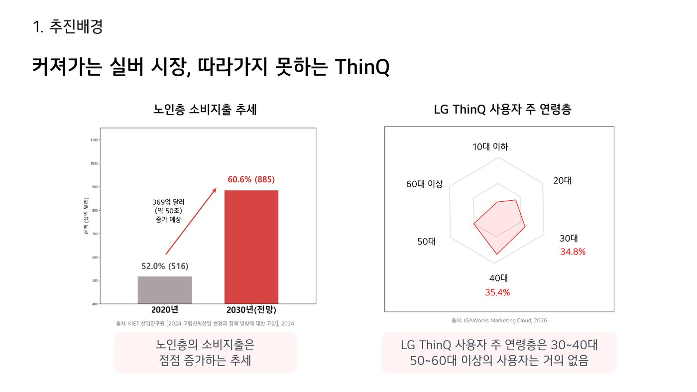
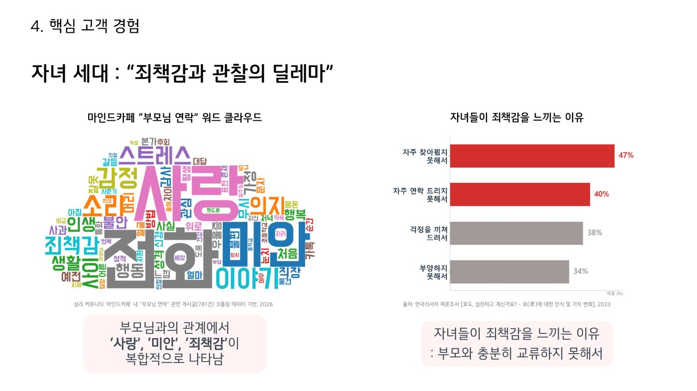
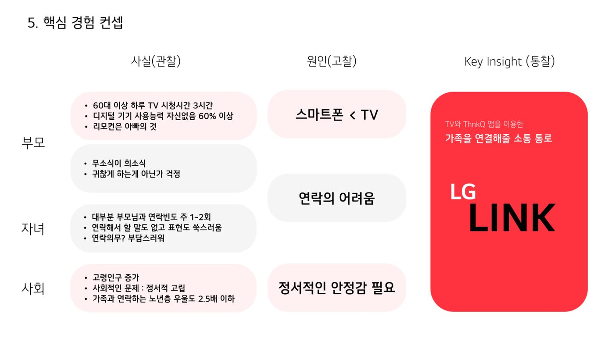
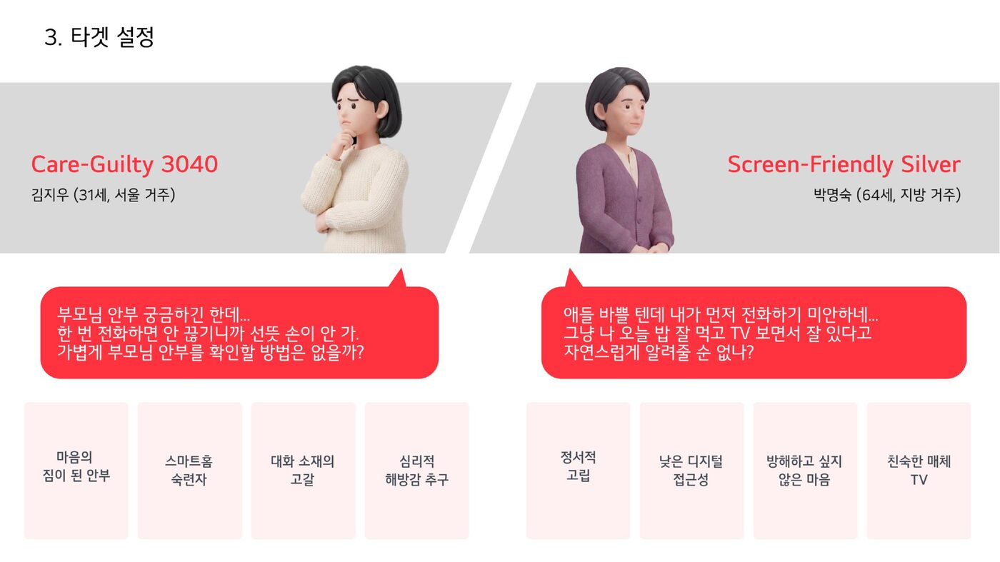
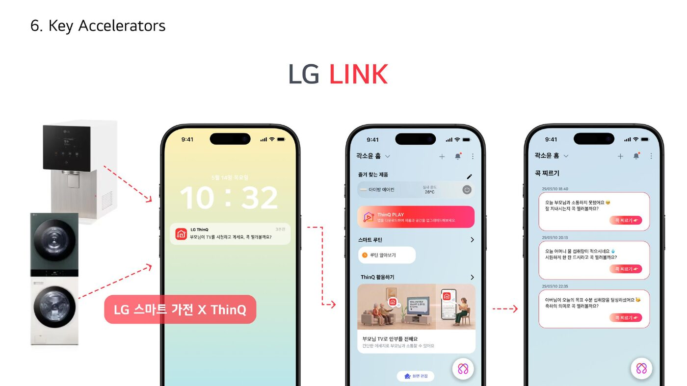
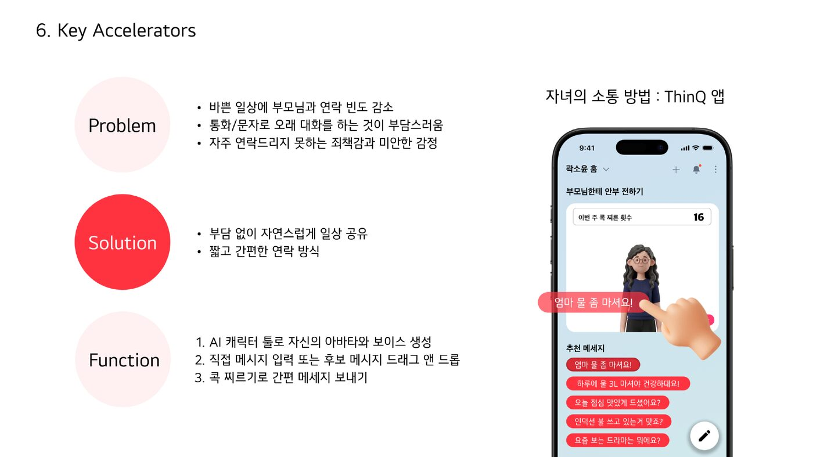
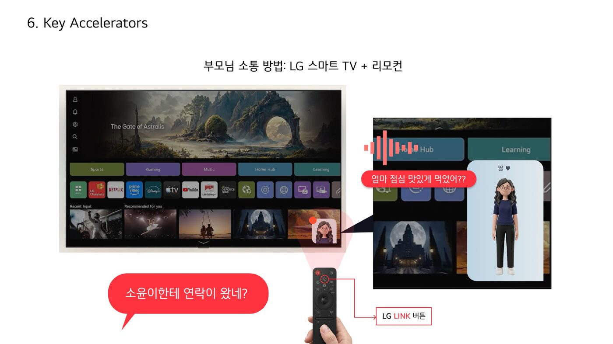
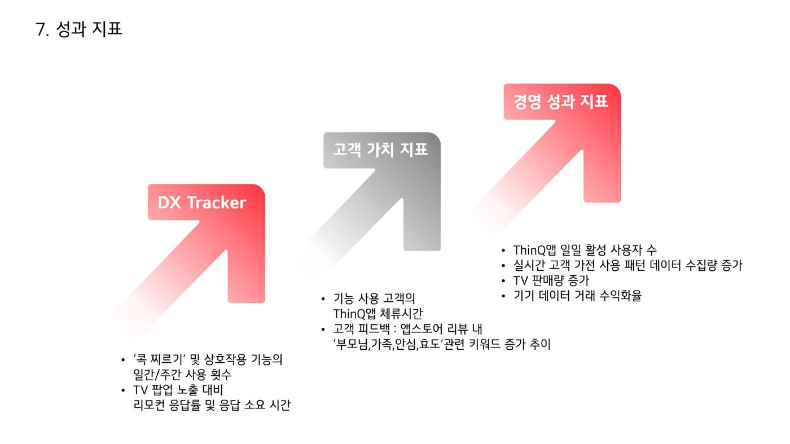

ThinQ 앱과 LG 스마트 TV를 잇는 가족 소통 서비스
“LG전자를 하루에 한 번 만나게 해주세요”라는 과제에서 출발해, 떨어져 사는 부모와 자녀의 소통에서 ThinQ를 다시 열 이유를 찾았습니다. 팀이 수집한 커뮤니티 URL 781개와 공공데이터로 소통 장벽을 분석하고, 세대마다 익숙한 화면(자녀는 ThinQ, 부모는 TV·리모컨)으로 안부를 주고받는 서비스 콘셉트를 제안했습니다.
과제는 “LG전자를 하루에 한 번 만나게 해주세요”였습니다. 팀은 기능을 더하기보다, 고객이 ThinQ를 다시 찾을 이유에 주목했습니다. 자료에서 ThinQ 이용자는 30~40대에 집중됐고 60대 이상 비중은 낮았습니다. 그래서 고령층에게 새 앱 학습을 요구하기보다, 익숙한 기기와 ThinQ를 함께 쓰는 방향을 검토했습니다.
자녀가 ThinQ를 다시 열 이유를 부모와의 소통에서 찾자는 것으로 문제를 정리했습니다.

마인드카페 ‘부모님 연락’ 검색 결과 URL 781개와 노인실태조사·디지털정보격차 실태조사·효도 인식 조사 등 공공데이터를 함께 살폈습니다. 커뮤니티 게시글에서는 ‘사랑’, ‘미안’, ‘죄책감’이 반복됐고, 연락 의향보다 긴 통화와 반복적인 안부 대화의 부담이 문제로 나타났습니다.

한편 고령층은 소통을 원하면서도 새 인터페이스 학습에는 어려움을 느꼈고, TV 시청시간은 60~70대에서 상대적으로 길었습니다. 팀은 새 앱 대신 부모가 이미 쓰는 TV·리모컨을 소통 창구로 선택했습니다.

마인드카페 자료는 전체 자녀 세대를 대표하지 않는 탐색 자료로 사용했으며, 표본·조사 시점이 다른 수치는 직접 비교하지 않았습니다. TV 접점은 리모컨 친숙도와 실제 이용 상황을 확인해야 할 매체 가설입니다.
자녀와 부모를 같은 경험에 참여하는 두 사용자로 놓고 함께 설계했습니다. 실제 인터뷰 참여자가 아니라 수집 자료와 공공조사로 만든 합성 페르소나입니다.
세대마다 익숙한 화면을 이용해, 떨어져 사는 부모와 자녀가 부담 없이 일상적으로 안부를 주고받게 할 수 있을까?

자녀는 ThinQ에서 부모의 소통 화면에 들어가 직접 작성하거나 추천 메시지를 골라 ‘콕 찌르기’를 보냅니다. 부모는 TV에서 메시지를 확인하고 리모컨으로 반응하고, 자녀는 ThinQ에서 응답을 확인합니다. 긴 통화를 걸지 않고, 새 앱을 배우지 않고도 안부를 주고받는 낮은 부담의 방법입니다.



기획 중반에 팀 의견이 갈렸습니다. 한쪽은 TV 속 가상공간에서 아바타로 교류하는 새로운 경험을, 다른 쪽은 고령의 부모가 부담 없이 쓸 수 있는 단순한 기능을 제안했습니다. 저는 둘 중 하나를 고르기 전에 각 주장이 지키려는 가치를 먼저 정리했습니다. 하나는 가족 간의 정서적 연결, 다른 하나는 사용 부담을 낮추는 것이었습니다. 그 위에 4일이라는 기간과 실제 고객 문제와의 부합 여부를 공통 판단 기준으로 제시했습니다.
이 기준으로 보면 가상공간 구현은 남은 기간 안에 설득력 있게 보여주기 어렵고, 부모의 사용 부담도 커집니다. 결국 공간 기능은 덜어내고 아바타와 목소리라는 정서적 요소만 남겨 TV 메시지 기능에 넣었습니다. 최종 산출물의 TV 화면이 메시지와 리모컨 반응 중심으로 정리된 것은 이 판단의 결과입니다.
10개 팀이 참여한 LG전자 DX스쿨 BX 프로젝트에서 장려상을 받았습니다. 장려상은 4~5위 구간에 주어지며, 심사는 LG전자 현업 실무진과 DX스쿨 운영진 2인이 맡았습니다. 구체적인 순위는 공개되지 않았습니다.
4일 동안 커뮤니티 게시글 URL 781개와 노인실태조사·디지털정보격차 실태조사 등 공공데이터를 분석해, 22페이지 발표자료와 합성 페르소나 2종, ThinQ·TV 화면 목업, KPI 체계를 완성했습니다.
평가에서 강점으로 언급된 항목은 고령층의 TV 친숙도와 디지털 소외를 교차 분석한 점, TV를 매개로 삼은 접근의 논리성, LG 생태계 확장과 사회적 가치를 함께 본 점이었습니다.
보완 지적은 세 가지였습니다.
발표자료의 체류시간·상호작용·TV 판매량 그래프는 실제 성과가 아닌 가상 시뮬레이션이며, 기대 가치는 검증 전 가설입니다. 교육 과정에서 진행한 기획이라 실제 운영 데이터는 없습니다.

의견이 갈릴 때 어느 쪽이 옳은지를 겨루기보다 판단 기준을 먼저 합의하면 논의가 빨리 정리된다는 것을 배웠습니다. 서로 다른 관점도 같은 기준 위에 올려놓으면 더 나은 답의 재료가 됐습니다.
4일이라는 기간 안에서는 좋은 아이디어를 모두 담을 수 없었습니다. 중요도에 따라 무엇을 넣고 무엇을 버릴지 정하는 일이 팀장의 실질적인 업무라는 것도 이때 알게 됐습니다.
TV를 접점으로 고른 근거를 시청시간 중심으로만 제시해, 리모컨 친숙도나 스마트폰 대비 진입장벽 같은 사용성 비교가 빠졌습니다. 발신 이후 부모가 응답하지 않거나 신호를 잘못 읽는 상황도 여정에 담지 못했고, 데이터 공유 동의·알림 조절·연결 해제 같은 프라이버시 원칙은 정의하지 않았습니다.
TV 접점의 근거를 스마트폰과의 사용성 비교로 보강하고, 발신부터 미응답·오탐까지 한 흐름으로 보이는 여정을 그리겠습니다. 프라이버시 원칙은 기능 설계와 같은 단계에서 정의하겠습니다.